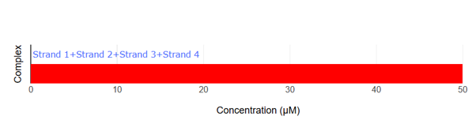

Overview of the design

Fig.1 Overall Design Diagram
Hungry Gel is composed of three types of DNA modules: DNA aptamers, entropy-driven circuits, and DNA hydrogels. In this paper, we describe in detail the roles and functions of each module, as well as how they cooperate to produce a series of responses.
DNA Aptamer

Fig.2 Aptamer Mechanism
DNA aptamers are short sequences of DNA or RNA that bind strongly and specifically to particular molecules. By changing the aptamer sequence, the target bacteria can also be altered. In this experiment, the aptamer reacts with the target bacteria, exposing a new DNA sequence.
In particular, the aptamer is immobilised within the hydrogel, waiting for the target bacteria to approach without reacting with other molecules. When the target bacteria approach the aptamer, it binds to them and changes its structure. This causes the aptamer to unfold, exposing a new DNA sequence that was previously hidden inside its folded three-dimensional structure.
In this study, we propose this conceptual mechanism as a design framework. However, we did not conduct the actual design or incorporation of specific aptamer sequences.
When constructing future systems tailored to specific targets, the aptamer sequence must first be selected based on the target. The DNA sequence of the Entropy Driven Circuit and the corresponding DNA hydrogel motif sequence then need to be designed according to this sequence.
Entropy Driven Amplification Circuit

Fig.3 Entropy-driven Circuit
The role of the entropy-driven circuit is to amplify the weak output signal generated by the aptamer to a sufficient concentration to induce hydrogel dissolution. We used the enzyme-free amplification circuit proposed by Zhang et al. [1] without modifying its sequences and designed the DNA hydrogel sequences to match this circuit's output sequence.
As shown in Fig. 3, in this entropy-driven circuit, the Catalyst and Substrate first bind via domain 5 (Intermediate 1). Following structural changes through reversible branch migration at domains 4-5 (Intermediate 2), the binding through domain 3 alone becomes unstable, resulting in the release of SB (Intermediate 3). Then, Fuel and Intermediate 3 bind via domain 3 (Intermediate 4), undergo structural changes through reversible branch migration at domain 2 (Intermediate 5), and Output is released. As the strand displacement reaction proceeds at domain 4, the Catalyst is released (Reaction Complete).
In this reaction, the Catalyst is not consumed, but can be reused repeatedly, enabling a small amount of Catalyst to generate numerous Output molecules.
The sequences used in this circuit are listed in the Appendix.
DNA Hydrogel
・DNA Sequence Design

Fig.4 DNA Hydrogel Four-arm Motif
Fig.5 Assembly of DNA Hydrogel Four-arm Motif
本プロジェクトでは、Fig.4に示す4分岐DNAハイドロゲルモチーフを採用した。このモチーフはKandatsuら[2]を参考に設計し、4種類のDNA(strand 1, 2, 3, 4)から構成される。各モチーフは上下左右の4本のアームを持ち、低濃度でのゲル化を実現するためアーム長を34塩基とした。末端にはスティッキーエンドを配置しており、その配列はOutputが持つドメインBTに基づいて設計した。ドメインBは8塩基、トーホールドTは6塩基である。 具体的な配列はAppendixに記載しています。
In this project, we used a four-way branched DNA hydrogel motif, as shown in Fig. 4. Designed based on Kandatsu et al. [2], this motif consists of four types of DNA strands (strand 1, 2, 3 and 4). Each motif has four arms that extend upwards, downwards, to the left and to the right. The arms are 34 bases long to achieve gelation at low concentrations. The sticky ends are positioned at the terminals and their sequences are based on the BT domain possessed by the output. Domain B comprises 8 bases and toehold T comprises 6 bases. Strand 1 and 3 have B'T' at the 5' end, while Strand 2 and 4 have B. The detailed sequences are provided in the Appendix.
・Assembly Mechanism

Fig.6 DNA Hydrogel Network
Fig.5およびFig.6に示すように隣り合うモチーフはStrand 1, 3が持つB'とStrand 2, 4が持つBが結合することでネットワークを形成する。
As shown in Fig. 5 and Fig. 6, adjacent motifs form a network by connecting B' ,held by Strand 1 and Strand 3 ,with B held by Strand 2 and Strand 4.
・Dissolution Mechanism
Fig.7 Dissolution Mechanism
OutputはTBの配列を持つため，Fig.7のようにStrand 1,3のドメインT'をトーホールドとした鎖置換反応により，モチーフ間の結合がモチーフとOutputの結合に置き換えられ、全体としてハイドロゲルは溶解する。
Since the TB array is present in Output, the strand replacement reaction uses domain T' of strands 1 and 3 as a toehold. This replaces the motif-to-motif bonds with motif-to-Output bonds, causing the hydrogel to dissolve entirely, as shown in Fig. 7.
System Integration
本研究では、時間的制約を考慮し、まずHungry Gelシステムの中でもエントロピー駆動回路とDNAハイドロゲルの溶解を結びつけることが可能かを検証することに注力した。そのため、これら2つの要素に絞って配列設計を行った。 具体的には、エントロピー駆動回路から生成されるOutput DNAがDNAハイドロゲルの架橋結合を解離させることができるよう、ハイドロゲルモチーフの配列を設計した。将来的には、アプタマーが標的細菌と結合した際の構造変化により露出するDNA配列が、そのままエントロピー駆動回路のカタリスト配列として機能するよう統合する予定である。 配列設計にあたっては、NUPACKソフトウェアを用いて、エントロピー駆動回路とハイドロゲル配列間の意図しない結合を回避するようにして、設計を行った。この設計が実際に意図した動作を示すかを、実験により検証した。
Considering time constraints, this study focused first on testing whether the entropy-driven circuit could be linked to DNA hydrogel dissolution within the Hungry Gel system. Accordingly, sequence design was limited to these two components. Specifically, the hydrogel motifs were designed so that the Output DNA generated by the entropy-driven circuit could dissociate the crosslinks in the DNA hydrogel. In the future, the system is intended to be integrated such that the DNA sequences exposed upon aptamer binding to target bacteria can directly function as catalyst sequences for the entropy-driven circuit. For sequence design, NUPACK software was used to avoid unintended interactions between the circuit and hydrogel sequences. The functionality of the designed system was then experimentally validated to confirm that it behaved as intended.
Reference
[1]David Yu Zhang, Andrew J. Turberfield, Bernard Yurke, and Erik Winfree(2007)”Engineering Entropy-Driven Reactions and Networks Catalyzed by DNA”.Science,318,pp.1121-1125
[2]Daisuke Kandatsu et al.(2016)”Reversible Gel-Sol Transition of a Photo-Responsive DNA Gel”.ChemBioChem,17.pp.1118-1121
Appendix
Sequence List
・DNA sequence used as a motif
| Name | Sequence (5'→3') |
|---|---|
| Strand1 | AAGTTTTGACCTTAGGGTTCCCCTTACGCATCTTCGCGGGTAGCTAAATTAAGATTGCTAGCGAGGCCGACGAAGGTGTAGG (82bp) |
| Strand2 | GGCCTCGCTAGCAATCTTAATTTAGCTACCCGCGACATCAAGCCACGGCGCTGAGAAAGATGGAACAACCTACACC (76bp) |
| Strand3 | TTGTTCCATCTTTCTCAGCGCCGTGGCTTGATGTCCTGATCTCTTTAAACGGAAGCTTTGACGAAACGGACGAAGGTGTAGG (82bp) |
| Strand4 | CGTTTCGTCAAAGCTTCCGTTTAAAGAGATCAGGAAGATGCGTAAGGGGAACCCTAAGGTCAAAACTTCCTACACC (76bp) |
・Entropy Driven Amplification Circuit
| Name (see entropy driven circuit diagram) | Sequence (5'→3') |
|---|---|
| Catalyst | CATTCAATACCCTACGTCTCCA |
| Signal | CCACATACATCATATTCCCTCATTCAATACCCTACG |
| Fuel | CCTACGTCTCCAACTAACTTACGGCCCTCATTCAATACCCTACG |
| Output | CTTTCCTACACCTACGTCTCCAACTAACTTACGG |
Sequence design using NUPACK
・Motif binding

Fig.8 NUPACK Simulation Result 1
Fig.9 NUPACK Simulation Result 2
[2]の論文では、アーム34塩基で同じ、長さ8塩基のスティッキーエンドのモチーフにおいて各strand50 μMでゲルができていたので、Nupackでも各DNAの濃度を50 μMでシミュレーションした。設計した4つのstrandを混ぜると、十字モチーフのみができる。狙い通りに設計できている。
According to reference [2], a hydrogel was formed with a motif consisting of 34-base arms and 8-base sticky ends when each strand was present at 50 μM. Accordingly, in our NUPACK analysis, the concentration of each DNA strand was set to 50 μM. When the four designed strands are mixed, only the four-arm motif is formed.
・Long sticky end and short sticky end binding
Fig.10 NUPACK Simulation Result 3
Fig.11 NUPACK Simulation Result 4
スティッキーエンド同士(strand1:長い方、strand2:短い方で各50 μM)を混ぜると、スティッキーエンド同士で結合する。狙い通りの設計になっている。 さらに、スティッキーエンド同士の結合を、私たちの設計したモチーフと引用した論文[2]のモチーフで比較すると、私たちの設計の方が結合エネルギーが低くなっているので、私たちの設計したモチーフ同士がスティッキーエンドを介して十分に結合すると考えられる。
When the sticky ends (strand1: 14nt, strand2: 8nt, each at 50 μM) are mixed, they hybridize with each other. Furthermore, comparing the binding energies of the sticky ends between our designed motif and the motif from the referenced paper [2], our design exhibits a lower binding energy, suggesting that our motifs bind more strongly with each other than the reference.
・Long sticky end and Output binding
Fig.12 NUPACK Simulation Result 5